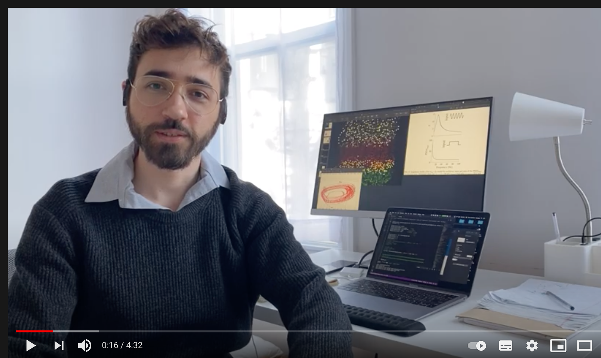

Check this piece I wrote about my postdoc at the US and some of my story for the Journal of Stories in Science.
You can also see a video (in Portuguese) where I talk about my field of research for the FAMB graduate program at the Department of Physics, University of Sao Paulo, where I obtained my Ph.D.
